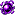

Entra preparado. Salir ya es otra historia.
Consulta expediciones, botín y el camino hacia el final. Los jefes y enemigos tienen ahora un archivo táctico propio.
Expediciones al Doom

Sello del Doom
Abre el menú de expedición a la Dimensión Doom. En Fase 2 no puede activar la dimensión; el Sello permanece inerte hasta Fase 3. También puedes abrir el panel con /scuad:doom.

Núcleo del Doom
Recurso esencial de la progresión Doom. Antes de que la dimensión se abra, cada uno de los cuatro minijefes de Fase 2 tiene 5% de probabilidad de soltar 1 Núcleo; desde Fase 3 también aparece en el botín del Doom.

Catalizador del Cataclismo
Material necesario para transformar una pieza de Netherite en Armadura de la Perdición.

Armadura de la Perdición


Mejora cada pieza de Netherite usando un Catalizador del Cataclismo. El set completo suma 44 puntos de protección, es irrompible y otorga Fuerza, Resistencia II, Resistencia al Fuego, Visión Nocturna y 5 corazones extra.
Protección por pieza: Yelmo 9 - Coraza 14 - Grebas 12 - Botas 9.
La pieza base determina si obtienes yelmo, coraza, grebas o botas.

Espada de la Perdición
Espada irrompible de 12 de daño base y encantabilidad 18. Es el arma del conjunto Perdición y sirve como base para el Filo del Horizonte.
Sin forma: los ingredientes pueden colocarse en cualquier posición.
Recompensas de expedición
Cada 12 enemigos recibes 20 + fase×8 ScuadCoins, 2–5 Ender Pearls, comida de expedición y una alta probabilidad de un consumible de movilidad/supervivencia. También puede aparecer Chorus Fruit, Manzana Dorada y, en Fase 5, una posibilidad muy baja de Manzana Encantada. El Tónico del Minero ya no forma parte de esta recompensa.
Jefes, élites y recompensas
Los combates ya tienen una sección propia.
Consulta las guías actualizadas: 11 patrones únicos por minijefe pre-Insignia, 16 para la Dragona Ascendente y repertorios exclusivamente aéreos desde el Custodio del Nexo.

Recompensas de jefe
Los jefes entregan ScuadCoins, esmeraldas y posibilidades de botín raro; combatir dentro del Doom añade una bonificación independiente.

Progresión
Desde Fase 4, minijefes y amenazas avanzadas participan en la progresión hacia Horizonte mediante Esquirlas del Ocaso.
Fase 4: Dragona del Cataclismo
Dragona del Cataclismo
En Fase 4, usa un Catalizador en el End para despertar a la Dragona del Cataclismo. Derrotarla es el hito que abre la Fase 5.
Fase 5: Boss Rush y cierre
Boss Rush final
Tier 1: Ravager → Warden → Wither. Tier 2: todos los minijefes SR ordenados por fase y vida. Tier 3: Dragona Ascendente → Custodio del Nexo → Dragona del Cataclismo → Coloso del Umbral → Nameless Deity. La Insignia está bloqueada hasta el Custodio, funciona en Custodio/Cataclismo/Coloso y vuelve a bloquearse contra Nameless.